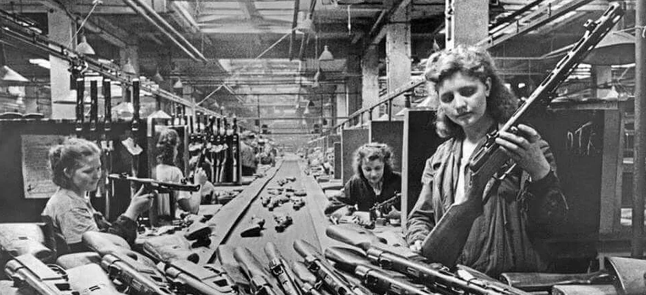

Труженики тыла
Труженики тыла принимали не меньшее участие в борьбе с германскими захватчиками, чем воины, находившиеся на линии фронта. Женщины и подростки (большинство мужчин были мобилизованы) обеспечивали воинов всем необходимым: боеприпасами, одеждой и обувью, продовольствием. Все народное хозяйство СССР было в короткое время переориентировано на нужды фронта.Вероломное нападение захватчиков на следующий день после того, как в школах прошли выпускные вечера, стало большим потрясением для советских людей.В первые месяцы войны народ еще верил в лозунги правительства в кратчайшие сроки устранить агрессора, но оккупированная территория все расширялась, а граждане понимали, что освобождение от фашистов зависит не только от действий власти, но и от них самих.
В конце июня 1941 года правительство приняло первый военный план, который был попыткой переориентировать экономику на ведение войны. Программа производства техники, если сравнивать с довоенным планом, была увеличена на четверть. В список ударных строек вошли предприятия химической и металлургической промышленности, электростанции и железные дороги, заводы, выпускающие военную продукцию.Важнейшие в экономическом плане районы страны на тот момент уже были захвачены врагом. На оккупированной территории до начала вторжения немецкой армии проживало 40 % населения, производилась третье валовой продукции, выращивалось 38 % зерна. В восточные районы, то есть в советский тыл, в годы Великой Отечественной войны в срочном порядке эвакуировались сотни промышленных предприятий.
Уже к зиме 1941-го на Урал, в Сибирь и Среднюю Азию перемещены были более 1500 предприятий и десять миллионов человек. На новом месте нередко разворачивали производства прямо под открытым небом. Труженики советского тыла в годы войны (кратко о них будет рассказано далее) работали на нужды страны, не дожидаясь, пока будет возведена крыша над головой.
Все достижения экономики в военные годы опирались на самоотверженный труд советских людей. Женщины и подростки работали в тяжелых условиях, проявляли необычайные стойкость и упорство, не жалели сил и здоровья.
Советские люди массово записывались в ополчение, сдавали кровь, жертвовали деньги и материальные ценности на нужды оборонной промышленности.Девушки, не достигшие совершеннолетия, скрывали свой возраст, чтобы пойти медсестрами на фронт. Мобилизацию подлежали миллионы советских граждан, а в тылу развернулось масштабное обучение военному и медицинскому делу. Все предприятия были переведены на военное положение. Установлен одиннадцатичасовой рабочий день, шестидневная рабочая неделя, отпуска отменялись, а сверхурочные работы стали обязательными.
В годы войны продолжались аресты и репрессии. Солдаты и офицеры, попавшие в плен, объявлялись изменниками, а их семьи лишались гос. пособия и материальной или продовольственной помощи. В самом начале немецкого наступления подозреваемые в контрреволюционной деятельности или осужденные подлежали расстрелу на месте.